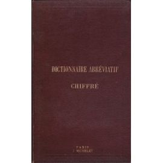
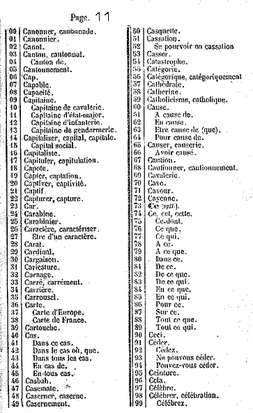

Les substitutions à répertoire
Les substitutions à répertoire (on les appelle aussi chiffres du dictionnaire, ou code commercial) sont des méthodes de chiffrement par substitution mais où, au lieu de remplacer une lettre par un symbole, on s'autorise aussi à remplacer des syllabes, des mots, des expressions. L'idée est qu'il y ait un nombre si grand de substitutions possibles pour que toute tentative de déchiffrement par analyse des fréquences soit impossible. L'inconvénient est qu'il y a un tel nombre de substitutions possibles qu'il est impossible de les retenir. Elles doivent donc être résumées dans un livre, qui doit être diffusé largement à tous les correspondants. La fouille d'un officier capturé ou tué, des livres ou des fragments de livre copiés par des espions, et le système de chiffrement tombe dans les mains ennemies et devient inutile. D'ailleurs, ces codes étaient souvent utilisés avec un surchiffrement, comme une transposition à tableaux.
Il y a essentiellement deux types de code :
- dans un code ordonné, il y a, dans chaque rubrique, un parallélisme entre le classement alphabétique des éléments clairs et le classement des groupes codiques qui leur correspondent. En conséquence, le même document peut servir au chiffrement comme au déchiffrement.
Exemple d' un fragment de code ordonné :
2788 bicoque 2789 bicyclette 2790 bidon 2791 bien 2792 bien qu', que 2793 bien que l', le, la 2794 bien que les 2795 bien qu'un, une 2796 bienfaisant, -sance 2797 bienfait, -teur 2798 bien-fondé 2799 biennal - dans un code désordonné ce parallélisme n'existe pas, ce qui impose sa division en deux parties : dans la première, dite partie chiffrante, les éléments clairs sont classés alphabétiquement dans chacune de leur rubrique, mais les groupes codiques se succèdent dans un ordre incohérent, dans la deuxième, dite partie déchiffrante, tous les éléments du code, sans distinction de rubrique, sont classés dans l'ordre normal des groupes codiques et, par conséquent, les éléments clairs se trouvent dans un ordre incohérent.
Exemple de fragments d' un code désordonné :
Partie chiffrante :
Partie déchiffrante :0013 refaire 3865 réfection 1868 référé 4172 référence 7482 référence à mon message 5790 référence à votre message 8088 référendum 3957 référer 1189 réfléchir 0431 réflexe,-xion 4373 refonte 5864 réforme,-mer
8083 dépendre,-dant,-dance 8084 enfoncer 8085 allemand 8086 statut 8087 Puy de Dôme 8088 référendum 8089 incohérent,-ence 8090 comporter,-tement 8091 libre,-ement 8092 province,-cial 8093 garçon 8094 recours,-rir Ces codes ont connu leur heure de gloire à partir de la seconde moitié du XIXè siècle avec l'avénement du télégraphe. Ils permettaient en effet de transmettre des phrases entières à l'aide de 4 symboles. L'administration des télégraphes facturait cela beaucoup moins cher, d'où le succès de ces codes dans le commerce ou la finance, et leur nom de codes commerciaux. En outre, ils permettaient d'envoyer des messages illisibles par les concurrents, dans les domaines où la sécurité du chiffrement n'est pas primordiale.
Le code SittlerEn France, le plus connu de ces codes commerciaux était le code Sittler, qui fut très utilisé entre 1890 et 1920. Il était constitué de cent pages, chacune constitué de 100 mots classés alphabétiquement, et mis en correspondance avec les nombres 00 à 99 (eux aussi dans l'ordre). Chaque page était donc du type code ordonné. En revanche, les numéros de page pouvaient être modifiés à la guise des correspondants. Les mots du texte clair étaient alors remplacés par 4 chiffres : les deux premiers correspondaient à la page (ils dépendaient de la pagination choisie), les deux suivants correspondaient au numéro sur la page choisie. Ainsi employé, le Sittler était un vrai moyen de chiffrement, dont la clé était la pagination choisie.
Voici une page du code Sittler :
 Avec la pagination choisie, on chiffre donc Caution par 1167.
Même si le nombre de clés possible est très grand, ce chiffre est toutefois peu sûr. L'étude de l'occurrence de certains mots très courants (par exemple, les articles), permet de retrouver une partie de la pagination et de reconstruire la clé peu à peu. D'ailleurs, le mode d'emploi du Sittler (de son vrai nom, le Dictionnaire abréviatif chiffré de Sittler), recommande un surchiffrement, c'est-à-dire une modification supplémentaire sur le code donné. Cela pouvait être par exemple une permutation des 4 chiffres.
Le mode d'emploi, que l'on trouve en tête du dictionnaire, est le suivant :
CORRESPONDANCE SECRETE
La loi du 13 juin 1866 accorde au public la faculté de
correspondre en chiffres par le télégraphe
L'extrême importance de ce mode de communication ne peut échapper à personne. Il est aussi utile dans les relations de famille et les transactions commerciales, que dans les rapports diplomatiques.
Le Dictionnaire chiffré, de F.-J. SITTLER, composé dans le but de faciliter la rédaction et la traduction de dépêches secrètes, renferme à peu près tous les mots et expressions d'un usage fréquent.
Pour employer le langage secret, au moyen de ce Dictionnaire, il suffit d'indiquer à son correspondant la page et la ligne où se trouve le mot ou l'expression qu'on veut lui transmettre.
A cet effet, on adopte d'un commun accord, une pagination conventionnelle, en employant dans un ordre quelconque les numéros depuis 00 jusqu'à 99, et une combinaison également conventionnelle des deux chiffres de la page avec ceux de la ligne.
EXEMPLE : Supposons que la première page reçoive le no 82, l'expression : « Nous acceptons votre offre, » ligne 64, sera représentée :
par 8264
ou 6482
ou 8624
ou 6824
etc., etc.c'est-à-dire que la page sera représentée, ou par les deux premiers chiffres ou par les deux derniers, ou par le 1er et le 3ème, ou par le 2ème et le 3ème, etc., et la ligne par les deux autres. On peut ausi, d'un commun accord, augmenter ou diminuer d'une ou plusieurs unités, un quelconque des 4 chiffres du groupe.
Il est facile de se convaincre qu'on peut ainsi créer un nombre infini de clefs absolument indéchiffrables.
Les mots, syllabes et lettres, se suivent dans l'ordre alphabétique. Les réunions de mots, locutions et expressions se trouvent à la suite du mot qui en forme le sens principal.
EXEMPLE : « Je vous préviens que » se trouve après le mot prévenir. A la fin de chaque lettre, quelques lignes ont été laissées vides pour recevoir les mots ou noms propres qu'il pourrait convenir aux correspondants d'y ajouter.
Afin de comprendre dans le Dictionnaire le plus grand nombre de mots possible, il a été fréquemment porté sur la même ligne, tantôt le verbe et le substantif, tantôt l'adjectif et l'adverbe; dans l'usage, le sens indique facilement lequel des deux mots on doit employer.
Les verbes figurent à l'infinitif et sont toujours traduits par le présent de l'indicatif, lorsqu'ils ne sont suivis d'aucune indication de temps. EXEMPLE : « Nous marcher » se traduira par : « Nous marchons. », tandis que « nous marcher futur » se traduira par « nous marcherons. » Les verbes d'un usage fréquent s'y trouvent d'ailleurs dans les principaux temps.
Les mots ou noms propres non contenus dans le Dictionnaire doivent être syllabés. Dans ce cas chaque syllabe commençant par une consonne sera représentée par un groupe de 4 chiffres.
Les groupes représentant les lettres, les syllabes, les signes de ponctuation, les temps des verbes, se succèdent de la même manière que ceux indiquant des mots ou des expressions.
On obtient le compte des mots d'une dépêche télégraphique chiffrée, en divisant la somme totale des chiffres par 5.- Ainsi, 25 groupes de 4 chiffres ne comptent que pour 20 mots.
MODÈLE D'UNE DÉPÊCHE CHIFFRÉE
LAMBERT FRÈRES, Constantinople : 1900 7810 3893 4111 6406
0010 0647 0341 2246 7428DUMONT.
Comme la lecture du mode d'emploi le pointe, l'utilisation du code Sittler est très facile. En revanche, la phrase on peut ainsi créer un nombre infini de clefs absolument indéchiffrables laisse rêveur. L'histoire contemporaine à ce code, en particulier l'affaire Dreyfus, montre à quelle point cette affirmation est fausse!
Merci à Nérosson pour l'aide dans l'écriture de cette pageConsulter aussi - dans un code désordonné ce parallélisme n'existe pas, ce qui impose sa division en deux parties : dans la première, dite partie chiffrante, les éléments clairs sont classés alphabétiquement dans chacune de leur rubrique, mais les groupes codiques se succèdent dans un ordre incohérent, dans la deuxième, dite partie déchiffrante, tous les éléments du code, sans distinction de rubrique, sont classés dans l'ordre normal des groupes codiques et, par conséquent, les éléments clairs se trouvent dans un ordre incohérent.